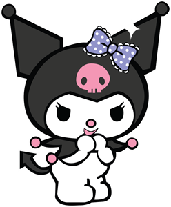

Kuromi
Kuromi is a tomboy, but behind her tough appearance, she is actually very girly. She enjoys writing in her diary and reading romance novels
Sanrio
It designs, licenses, and produces products focusing on the kawaii ("cute") segment of Japanese popular culture. Their products include stationery, school supplies, gifts, and accessories which are sold worldwide, including at specialty brand retail stores in Japan.